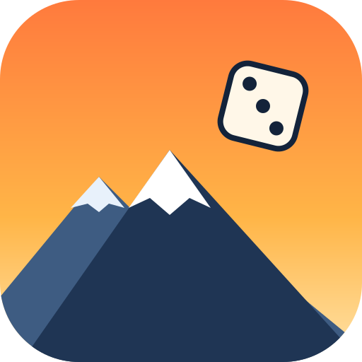

Altitude ArcadeDraw Race
Dessinez la trajectoire de votre voiture : la vitesse de votre doigt devient la vitesse de la voiture (dans les virages, elle ralentit toute seule). Enchaînez les tours sans lever le doigt, puis place à la course : gardez le Boost pour les lignes droites. Choisissez bien vos pneus selon la météo et le nombre de tours. Se joue le téléphone à l'horizontale.